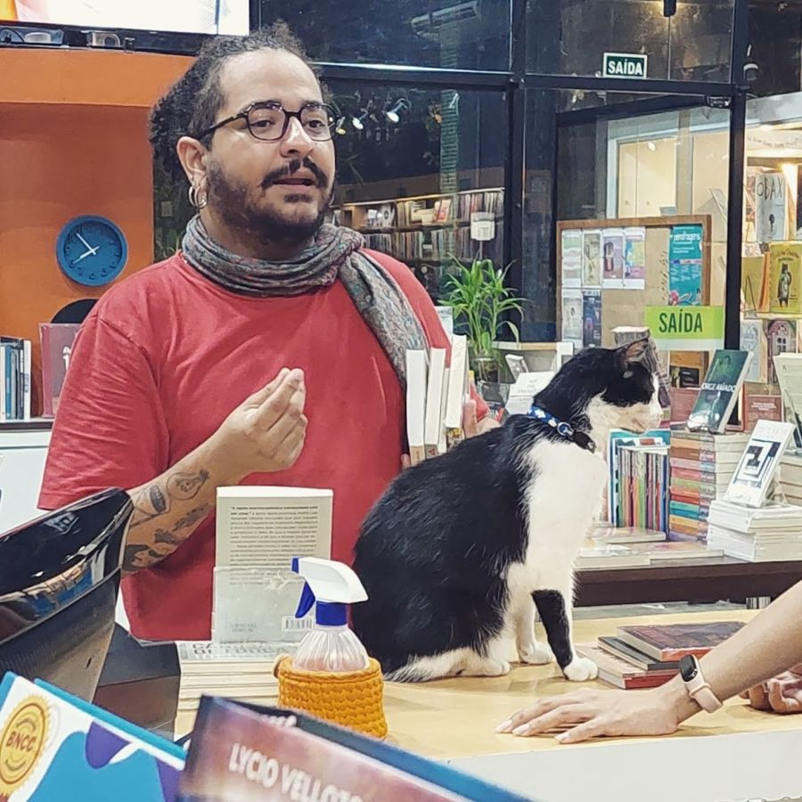

Psicanálise
Um espaço para falar livremente e se escutar.
Psicanálise no Centro de São Luís, com atendimento cuidadoso e comprometido, em horários que incluem a noite e o sábado.
★ 5,057 avaliações no Google
Um espaço para falar livremente e se escutar.
Compreender o que está por trás do sofrimento.
Olhar com mais clareza para a própria história.
Para quem trabalha durante o dia.
Lista de exemplo: na versão final entram exatamente os serviços do Jaime.
Você não está sozinho: os dados mostram o quanto isso é comum.
dos brasileiros convivem com transtorno de ansiedade, cerca de 18,6 milhões de pessoas.
Fonte: OMS, 2017convivem com depressão, cerca de 11,5 milhões de pessoas.
Fonte: OMS, 2017é o número do CVV: apoio emocional gratuito, 24 horas, todos os dias.
Fonte: Centro de Valorização da VidaBuscar ajuda é um passo de cuidado, não de fraqueza.
Responda em 1 minuto. Nada é enviado até você decidir mandar a mensagem.
Se você está em sofrimento intenso ou pensando em se machucar, ligue 188 (CVV, 24h, gratuito) ou procure o SAMU (192).
Quero agendar uma conversaNota 5,0 em 57 avaliações. Ver no Google →
Uma mensagem para tirar dúvidas e marcar.
Um primeiro encontro para se conhecerem.
O processo terapêutico respeita o seu ritmo.
R. do Alecrim, 465 · Centro, São Luís (MA)
(98) 98801-8204